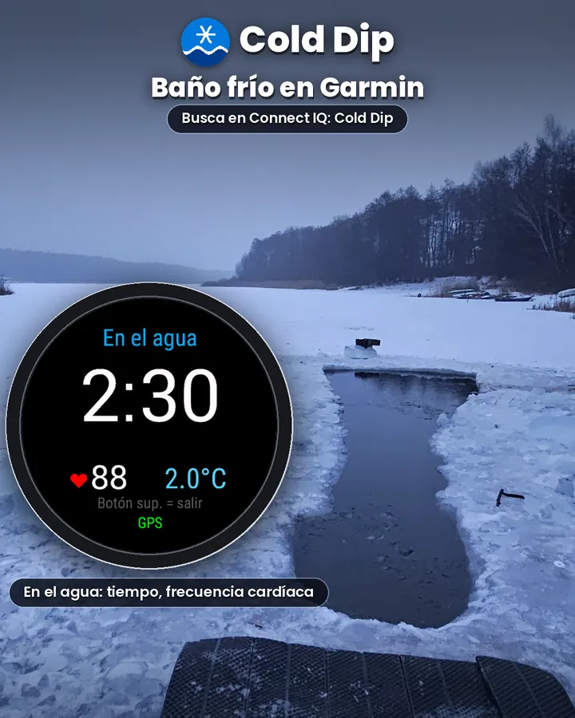
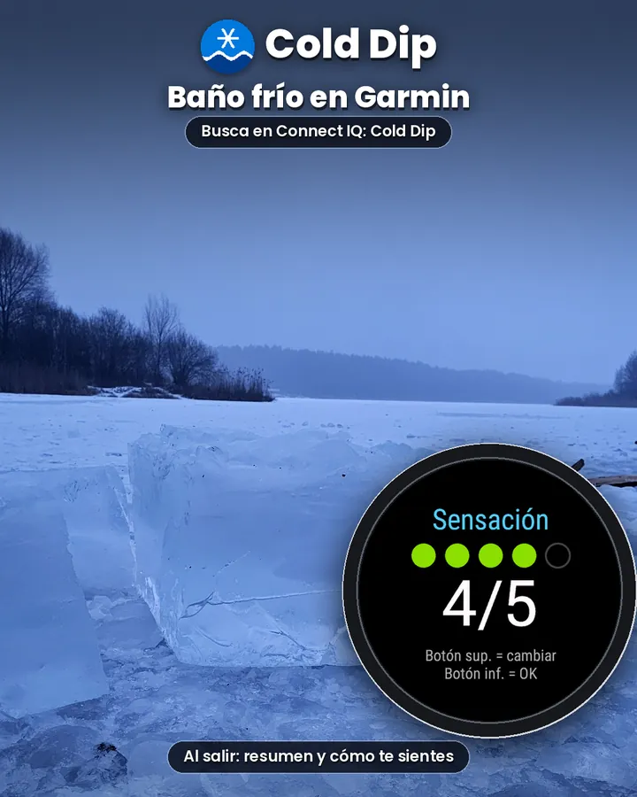
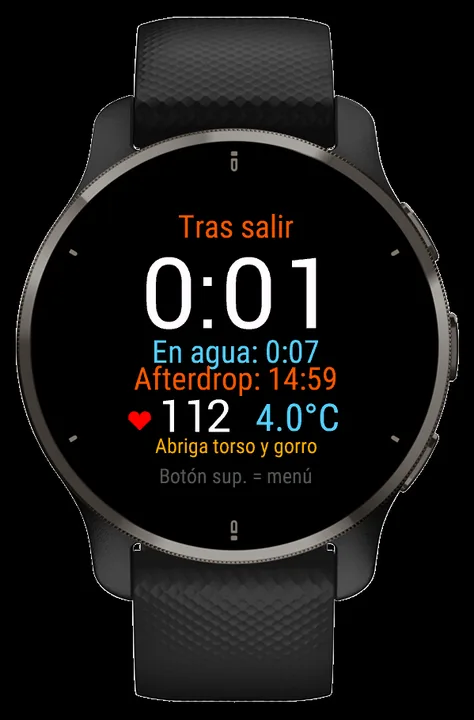

Antes / en el agua / después
El botón superior cambia de fase. El tiempo en el agua sigue contando — la app nunca te dice que salgas. Eso lo decides tú. Tu último tiempo es solo una referencia, no una marca que tengas que superar.
En el reloj, la app se llama Baño frío.
Baños de agua fría y natación invernal registrados como deben — no como una natación.
5,0 en Connect IQ · 1000+ descargas
O busca “Cold Dip” en la app Connect IQ del teléfono.


Sistemas
La app ya se puede descargar en relojes Garmin. La versión para Amazfit (Zepp OS) está en revisión en Zepp App Store. Las versiones para Huawei, Wear OS y Apple Watch están en camino.
Hecha para un baño frío, no para la piscina. Tú decides en todo momento.
El botón superior cambia de fase. El tiempo en el agua sigue contando — la app nunca te dice que salgas. Eso lo decides tú. Tu último tiempo es solo una referencia, no una marca que tengas que superar.
La frecuencia cardíaca se registra durante todo el baño. La temperatura del agua se introduce a mano y se guarda con la actividad.
Temperatura del aire, sensación térmica y viento, tomados del tiempo de Garmin en tu teléfono.
El lugar del baño se guarda y se muestra en un mapa en Garmin Connect.
Después de cada baño, una valoración rápida de cómo te sientes. También el pico y la recuperación de la frecuencia cardíaca, más Body Battery y el estrés antes de entrar.
Todo se guarda en Garmin Connect como una actividad propia, no como una natación.
Inglés, polaco, alemán, checo, eslovaco, finés, noruego, sueco, español, ruso y ucraniano. La app cambia automáticamente al idioma del reloj.
Forerunner, Fenix, Epix, Enduro, Venu, Vivoactive, Instinct 2 / 3 / E / Crossover y más. No es compatible con relojes muy antiguos, como el Forerunner 920XT (Connect IQ 1.x).
Extras opcionales en la app gratuita: solo pagas si los quieres
La app que ya usas sigue siendo gratis. Pro es para quienes quieren más de la temporada: nuevas formas de entrenar, una visión más clara de su progreso y una pantalla más simple en el agua.
4,99 USD pago único, más IVA donde corresponda · 7 días de prueba gratis
Prueba Pro gratis 7 días — luego 4,99 USD Actualizar en Connect IQ
Haz sauna con el reloj en la muñeca, una ducha fría, un contraste guiado de sauna y agua, o una preparación respiratoria breve antes de entrar. Siempre confirmas el cambio de fase con el botón.
Etapas con nombre y avisos a las horas que elijas, además de las alarmas gratuitas de cada minuto, de mitad y 3-2-1, que se quedan como están.
Tiempo total en el agua y en la sauna, récords de todos los tiempos y de la temporada (agua más fría, baño más largo) e historial de hasta 200 sesiones. La lista gratuita sigue mostrando las últimas 30.
Mantén una racha de 7, 14 o 30 días y gana insignias por 10, 25, 50 y 100 sesiones, el primer baño por debajo de 5°C, una sesión de contraste y sauna más baño en una sola sesión.
Un temporizador grande, una página de pulso y rondas, y temas (hielo, oscuro, alto contraste, sauna). Cambia de página con Arriba y Abajo.
Un temporizador enorme en el agua, temperatura del agua y pulso. Un solo botón para iniciar y parar. Sin menús ni pantallas extra. Lo activas en ajustes cuando hayas desbloqueado Pro.
Un tiempo sugerido según la temperatura del agua, con una regla habitual de club (más o menos tantos minutos como °C, entre 0:30 y 5:00). Es solo una pista: la app nunca termina la sesión ni dice que un tiempo sea seguro.
En relojes más nuevos puedes fijar una vista rápida y complicaciones: racha diaria, tiempo del último baño y minutos de temporada. La vista rápida es gratis en esos relojes. Las complicaciones necesitan una esfera que admita complicaciones de apps.
Al guardar un baño, una tarjeta sencilla muestra tiempo, temperatura, sensación y racha. Fotografía la pantalla para compartirla. Una lista del historial se queda en el reloj, y Garmin Connect sigue recibiendo la actividad FIT. No hay exportación a la nube ni imagen de Instagram: Connect IQ no puede enviar fotos por sí mismo.
Después del baño verás una curva simple de pulso, el pico y los valores de recuperación a 1 y 2 minutos. Solo es una pista, no un consejo médico.
Guarda un lugar de baño con la última temperatura del agua que registraste allí. Si estás cerca, la pantalla de inicio puede mostrar esa visita. No es una temperatura del lago en vivo: Connect IQ no tiene esa API.
Si dejas el reloj fuera para que no se sobrecaliente, activa la opción: la app no esperará pulso de muñeca en la sauna y puede iniciar una etapa de recalentamiento después. También puedes iniciar el recalentamiento tras el baño desde el menú.
| Qué incluye | Gratis | Pro ⭐ PRO |
|---|---|---|
| Todo lo que ya está en Cold Dip 1.0.3: cuatro perfiles, historial de 30, respiración guiada, GPS y más | ✓ Sí | ✓ Sí |
| Sauna, contraste y modos nuevos ⭐ PRO | — | ✓ Sí |
| Tus propias alarmas en el agua ⭐ PRO | — | ✓ Sí |
| Mira toda la temporada ⭐ PRO | — | ✓ Sí |
| Récords de todos los tiempos y de la temporada — agua más fría, baño más largo ⭐ PRO | — | ✓ Sí |
| Insignias y rachas diarias ⭐ PRO | — | ✓ Sí |
| Pantallas extra y temas de color ⭐ PRO | — | ✓ Sí |
| Modo simple, pensado para guantes ⭐ PRO | — | ✓ Sí |
| Una sugerencia de tiempo, no un límite ⭐ PRO | — | ✓ Sí |
| Vista rápida y complicaciones de esfera (relojes más nuevos) | En relojes más nuevos | En relojes más nuevos |
| Tarjeta de sesión y lista del historial ⭐ PRO | — | ✓ Sí |
| Gráfico de pulso y recuperación ⭐ PRO | — | ✓ Sí |
| Sitios guardados con la última temperatura del agua ⭐ PRO | — | ✓ Sí |
| Reloj fuera de la sauna y recalentamiento ⭐ PRO | — | ✓ Sí |
| Precio | Gratis | 7 días de prueba, luego 4,99 USD una vez |
Pro funciona en relojes Garmin más nuevos con Connect IQ 4 o posterior, incluidos Venu 2 / 3 / 4, Venu Sq 2, Venu X1, vívoactive 5 / 6, Forerunner 165 / 170 / 255 / 265 / 570 / 955 / 965 / 970, fēnix 7 / 8 / 9, epix (Gen 2), Instinct 3 AMOLED, Descent Mk3, Enduro 3 / 4, Approach S50 / S70 / S72 y MARQ (Gen 2) / (Gen 3). No funciona en modelos más antiguos o con menos memoria, como fēnix 5 / 6, el primer Venu, vívoactive 3 / 4, Forerunner 55 / 245 / 645 / 945, Instinct 2, Instinct 3 Solar o Instinct E: la app gratuita sigue funcionando en ellos. Comprueba tu modelo en la lista.
En Garmin Connect, una sesión de sauna se guarda como entrenamiento o meditación, porque Garmin no tiene un tipo de actividad «sauna».
La sugerencia de tiempo no es un consejo médico y no significa que una sesión sea segura. El agua fría y la sauna conllevan riesgo. Consulta a un médico, no vayas nunca solo y usa tu propio criterio. El control lo tienes tú en todo momento.
Busca tu modelo. La lista incluye los 133 relojes de Cold Dip.
Los relojes muy antiguos con Connect IQ 1.x, como el Forerunner 920XT, no se pueden admitir. Pro necesita un reloj más nuevo: busca tu modelo para comprobarlo.
Esferas
Esferas con morsa para el baño en agua fría. Mors – tarcza cambia con el tiempo. Mors Level sube de nivel con tus minutos de temporada. Dip Goals y Afterdrop, próximamente.


Esfera animada de morsa para baños de hielo
3,99 USD 24 horas de prueba gratis
Próximamente en Connect IQ Store Consíguela en Connect IQ Ver más
Esfera gamificada de morsa para baños de hielo
2,99 USD 7 días de prueba gratis
Próximamente en Connect IQ Store Consíguela en Connect IQ Ver más

Anillos de objetivos para chapuzones semanales, minutos de temporada y racha, más temperatura del agua y del aire, Body Battery y pulso. Cuatro temas.

Una esfera gratuita para Garmin con hora grande y 3 campos. Nunca se bloquea. Afterdrop Pro, opcional, desbloquea los campos de Cold Dip, la temperatura del aire, el amanecer y el atardecer, y 4 temas extra.
Esfera animada de morsa para baños de hielo
La morsa reacciona al tiempo: olas con buen tiempo, gorro con helada, se sacude la nieve y salta al agujero en el hielo cuando toca el baño frío. Hora, fecha, temperatura del aire, tiempo, frecuencia cardíaca, pasos y batería. La animación se reproduce al despertar el reloj — nunca en el modo siempre encendido.
3,99 USD pago único, más IVA donde corresponda
En relojes AMOLED, la morsa se mueve al levantar la muñeca — nunca en el modo siempre encendido.
Animación a todo color en relojes AMOLED como Venu 2, 2 Plus, 3 y 4, vívoactive 5 y 6, Forerunner 165, 170, 265, 570, 965 y 970, Fenix 8 y 9 (AMOLED), Epix 2, Descent Mk3, D2 Mach, Approach S70 y S72, Instinct 3 AMOLED y MARQ 2 y 3.
Esta esfera no está disponible en relojes MIP ni en modelos con menos memoria, como Fenix 5 Plus, Fenix 6 y 7, Fenix Solar, Forerunner 245, 255, 745, 945 y 955, Enduro, Descent Mk2, vívoactive 4, Venu 1 y MARQ de primera generación. Esas pantallas no pueden mostrar la animación a todo color.
Esfera gamificada de morsa para baños de hielo
Tu morsa sube de nivel a lo largo de 5 etapas a medida que crecen tus minutos de agua fría de la temporada, en vivo desde la app gratuita Cold Dip. En invierno, un agujero humeante en el hielo; en verano, una playa; además, la racha del día, la temperatura del agua, la frecuencia cardiaca, la batería y una pantalla always-on limpia. La animación de despertar se reproduce al despertar el reloj — nunca en el modo siempre encendido.
2,99 USD pago único, más IVA donde corresponda · 7 días de prueba gratis
Para subir de nivel con minutos, racha y temperatura del agua en vivo, instala la app gratuita Cold Dip. Sin ella, esos campos muestran simplemente los datos del reloj.
NOVATO 1/5


5 niveles
1/5
0–29 min esta temporada
2/5
30–119 min esta temporada
3/5
120–299 min esta temporada
4/5
300–599 min esta temporada
5/5
600+ min esta temporada


Animación a todo color en 51 relojes AMOLED como Venu 2, 2 Plus, 3 y 4, vívoactive 5 y 6, Forerunner 165, 170, 265, 570, 965 y 970, Fenix 8 y 9 (AMOLED), Epix 2, Descent Mk3, D2 Mach, Approach S70 y S72, Instinct 3 AMOLED y MARQ 2 y 3. El modo siempre encendido usa muy pocos píxeles encendidos.
Una esfera clara y estática en 19 relojes MIP como Fenix 7, Fenix 8 Solar, Forerunner 255 y 955, y Enduro 3 y 4. En total, Mors Level es compatible con 70 relojes Garmin, en 11 idiomas.
Valoración media de 5,0 ★ en Connect IQ Store y más de 1000 descargas.
★★★★★
„Super, pierwsze morsowanie z apką za mną, działa! Tego mi było trzeba! Dzięki”
Genial, mi primer baño en agua helada con la app hecho, ¡funciona! ¡Justo lo que necesitaba! Gracias (Traducido del polaco)
★★★★★
„Rewelacyjna apka. Przetestowana podczas morsowania. Wszystko działa dobrze”
App estupenda. Probada en un baño de agua helada. Todo funciona bien (Traducido del polaco)
★★★★★
„Działa nawet na starszym Garminie za co duże brawa dla autora”
Funciona incluso en un Garmin antiguo, un gran aplauso para el autor (Traducido del polaco)
★★★★★
„Świetna sprawa!💙”
¡Qué buena idea!💙 (Traducido del polaco)
Un baño de principio a fin — pantallas reales del simulador de Garmin.



Las versiones recientes de Cold Dip.
Los rangos son gratis, solo por diversión — nadie compite con nadie: Pingüino (1), Foca (5, 7 días de Pro gratis), Morsa Guerrillera (15, un código para la esfera Mors Komandos 2026/2027), Morsa Veterana (30, −30 % en Mors Level / Dip Goals, códigos próximamente) y Morsa Leyenda (50, un código para una esfera dorada a elegir: Mors Legenda Król 2026/2027 o Mors Legenda Posejdon 2026/2027). Cuenta como máximo un baño al día (temporada 1/10 – 30/4), y una sesión solo de sauna no cuenta. Son tres esferas de temporada independientes, pronto en la tienda Connect IQ, gratis: se ganan con un rango en Cold Dip. No entran en los paquetes de 5,99 / 7,99 USD, y cada temporada saldrán esferas nuevas.
Todos los récords — agua más fría y baño más largo, de todos los tiempos y de la temporada — pasan a Pro. Se siguen guardando para todos, y la app gratis muestra «¡Nuevo récord! Míralo en Pro». Una única petición de valoración aparece después del 3.º baño. El cronometraje, el pulso y el guardado en Garmin Connect siguen gratis. En los relojes antiguos y en blanco y negro sin Pro, los récords siguen gratis.
Ahora se puede ajustar la temperatura del agua por debajo de 0°C.
La temperatura del agua introducida al salir ahora se aplica solo a esa sesión. La pregunta ignora una pulsación accidental justo después de salir. Más robusta: la memoria llena o un error al guardar ya no bloquean la app, y un campo o deporte no compatible en un reloj antiguo ya no impide empezar. Corregidos los consejos de recalentamiento en polaco y ruso.
Corregido un cierre inesperado unos 20 s después de guardar la sesión (notificado en Venu 3S). Al salir del agua, el reloj pregunta la temperatura del agua; es gratis y se puede desactivar en ajustes.
Llega Cold Dip Pro. Todo lo de la 1.0.3 sigue siendo gratis. Pro es opcional: 4,99 USD una sola vez, con 7 días de prueba gratis. Modos nuevos: sauna, ducha fría, contraste guiado y preparación respiratoria; alarmas propias y etapas con nombre en el agua; estadísticas de temporada, insignias y rachas diarias (7 / 14 / 30); pantallas extra, temas de color y modo simple.
133 relojes, incluidos Instinct 2, Instinct 2S, Instinct 2X, Instinct 3 Solar, Instinct E e Instinct Crossover, y un nuevo diseño en blanco y negro para pantallas MIP.
126 relojes, incluido el Forerunner 55.
105 relojes, incluidos diseños rectangulares para Venu X1 y Venu Sq 2.
Primera publicación.
“Działa idealnie” (Funciona de maravilla)
Más de 10 minutos a 5°C: temperatura del agua en el reloj y todos los datos guardados en Garmin Connect.
Algunas cosas que la gente suele preguntar después de instalarla.
Instálala desde la app Connect IQ Store del teléfono, no desde Google Play ni el App Store. En el reloj encontrarás Cold Dip (Baño frío) en la lista de actividades / apps.
En el perfil «Agujero hielo» la ajustas con los botones − / + en la pantalla de inicio. En los demás perfiles, desde el menú: «Temp. agua manual». Si en el agua ves «--°C», la temperatura aún no se ha fijado.
Abre la actividad, entra en la pestaña «Estadísticas» y baja hasta la sección «Connect IQ». Ahí están la frecuencia cardíaca, la temperatura del agua, el tiempo, cómo te sentiste y los tiempos de cada fase. Las tarjetas de la pantalla «Resumen» las pone Garmin; la app no puede cambiarlas.
No. El reloj no puede medir la temperatura corporal. El sensor lee la temperatura del propio reloj, que depende de la piel y del aire. En Cold Dip la temperatura del agua se introduce a mano.
Las calorías las estima el reloj a partir de la frecuencia cardíaca; no las calcula Cold Dip.
Sí. La grabación se hace en el reloj, así que el móvil puede quedarse en la bolsa. Sin el móvil solo pierdes el tiempo meteorológico, porque viene del tiempo de Garmin en el móvil. La actividad se sincroniza con Garmin Connect la próxima vez que el reloj se conecte al móvil. Necesitas el móvil para instalar la app y para desbloquear Pro.
El reloj no puede medir solo la temperatura del agua: su sensor mide el propio reloj, calentado por la piel y el aire. En Cold Dip ajustas la temperatura del agua con − / + (o en el menú) y, al salir del agua, la app te la pregunta. Si tienes un sensor Garmin Tempe emparejado, la app usa su lectura. El sensor del reloj y la temperatura del aire nunca se presentan como temperatura del agua.
Pro es opcional y la app sigue siendo gratis. Pro añade sauna, ducha fría, contraste guiado y preparación con respiración, alarmas propias, estadísticas de temporada, récords de todos los tiempos y de la temporada (agua más fría, baño más largo), insignias y rachas diarias, pantallas y temas extra, un modo simple cómodo con guantes, una pista de tiempo según la temperatura del agua (una pista, nunca un límite) y un gráfico de frecuencia cardiaca. Pago único de 4,99 USD tras 7 días de prueba gratis. Ver todas las funciones Pro.
Los pagos se hacen con KiezelPay. Cuando quieras quedarte con Pro, el reloj muestra un código de 6 cifras. Introdúcelo en kzl.io/cold-dip-pro (para las esferas de pago: kzl.io/code) y paga una sola vez. Ten el móvil cerca con Garmin Connect y el Bluetooth activado: el reloj se desbloquea a través de esa conexión, normalmente en menos de 5 minutos.
Más de 130 relojes Garmin con Connect IQ: Forerunner, fēnix, epix, Enduro, Venu, vívoactive, Instinct 2 / 3 / E / Crossover y más. Pro necesita Connect IQ 4 o posterior. Los modelos muy antiguos, como el Forerunner 920XT, no son compatibles. Comprueba tu modelo.
La versión para Amazfit (Zepp OS) está lista y pendiente de revisión en la Zepp App Store. Las versiones para Huawei, Wear OS (Samsung Galaxy Watch, Pixel Watch) y Apple Watch están en preparación, aún sin fechas. Recibir aviso.
El agua fría es cosa seria. Estos son recordatorios generales de seguridad, no consejo médico. Tú decides cuándo entrar y cuándo salir.
Ve siempre con alguien que pueda ayudar si ocurre algo, o asegúrate de que alguien en la orilla te está vigilando.
Si eres nuevo en el agua fría, acostúmbrate poco a poco en lugar de empezar con un baño largo en agua muy fría.
Mucha gente empieza con poco tiempo en el agua y lo aumenta despacio. No hay un tiempo que “debas” aguantar.
Sal del agua en cuanto sientas que debes hacerlo: temblores fuertes, dolor, entumecimiento, confusión, o simplemente la sensación de que ya es suficiente. Cold Dip nunca te dice que salgas ni fija un tiempo que superar. Tu último tiempo es solo una referencia.
Sécate y abrígate lo antes posible al salir del agua. Ten la ropa de abrigo lista antes de entrar.
Al salir, la temperatura corporal central puede seguir bajando un rato mientras la sangre más fría vuelve de la piel y las extremidades. A esto se le suele llamar afterdrop. Sigue abrigándote, tómate tu tiempo y espera a encontrarte bien antes de conducir o montar en bici.
Cold Dip es una app de registro, no un producto sanitario, y no ofrece consejo médico. No puede decirte si es seguro para ti entrar en agua fría. Si tienes una condición de salud, estás embarazada o no estás seguro, habla primero con un profesional cualificado.
Textos breves y prácticos de alguien que se baña en agua helada. Consejos generales, no consejo médico.
Una regla popular de los clubes según la temperatura del agua, y por qué no es un límite seguro.
Por qué puedes sentir más frío después de salir y cómo entrar en calor con calma.
Los primeros baños paso a paso: compañía, poco tiempo, ropa de abrigo preparada.
Una mirada breve a un baño, desde la pantalla de inicio hasta el guardado en Garmin Connect.
Cold Dip llegará a más relojes. Deja tu correo y elige tu reloj: te escribiré una vez, cuando esa versión esté lista.
Guardo tu dirección solo para enviarte este único mensaje. Sin boletín. Escríbeme y la borro. ¿Prefieres un correo normal? lukasz.pszenny@gmail.com
¿Llevas un grupo, club o página de baños en agua fría? Comparte Cold Dip con tus miembros. La app es gratis y las imágenes y el texto de abajo están listos para publicar.
Escríbeme y tu club recibirá su propio código de descuento en Pro para sus miembros.
Para el vestuario, la sauna o el tablón del club. El código QR lleva a esta web.
Una esfera para Garmin con el logo de tu club, por encargo. Cuéntame qué tenéis en mente.
¿Tienes una idea para una app o una esfera Garmin? Hagámoslo juntos. Escríbeme y dime qué reloj usas.
Si ya usas Cold Dip, una reseña en Connect IQ ayuda mucho. ¡Gracias!
Cold Dip es gratuita. Si te ayuda en tus baños, puedes apoyar el trabajo que hay detrás.
Invítame a un café